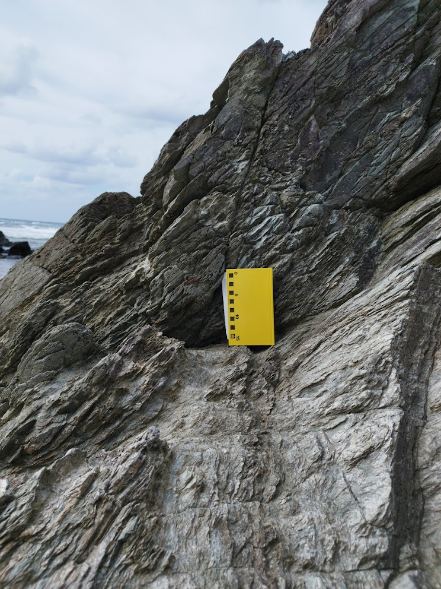

第2回「岩石鉱物と地層」

火成岩
火成岩は、マグマが冷えて固まった岩石です。火成岩には、深成岩と火山岩があります。 斑晶という小さな鉱物があり、これが成長しきると石基になります。
- 深成岩：地下で冷えた岩石、等粒状組織
- 火山岩：地表で冷えた岩石、斑状組織
| $SiO_2$の含有量 | 超塩基性岩 | 苦鉄質岩(塩基性岩) | 中性岩 | 珪長質岩(酸性岩) |
|---|---|---|---|---|
| 岩石の分類 | ||||
| 火山岩 (噴出岩) | 玄武岩 | 安山岩 | 流紋岩 | |
| 深成岩 | かんらん岩 | 斑れい岩 | 閃緑岩 | 花こう岩 |
| 鉱物 | ||||
| 無色鉱物 | 斜長石 | 石英 | ||
| 有色鉱物 | かんらん石 | 輝石 | 角閃石 | 黒雲母 |
| その他 | ||||
| 色指数 | (黒っぽい) 70 | 35 | 15 | (白っぽい) |
| 比重 | 約3.2 | 約2.7 |
造岩鉱物
造岩鉱物は、岩石を構成する鉱物です。
無色鉱物は石英と長石だけと覚えましょう。
- 無色鉱物：石英、長石(カリ長石、斜長石)
- 有色鉱物：輝石、角閃石、黒雲母、かんらん石
岩石の風化
岩石の風化は、岩石が物理的・化学的に分解される現象です。
- 物理的風化:風や水などの自然力によって岩石が砕かれる現象
- 化学的風化:酸素や水などと化学変化する現象
河川の作用
河川は、流水によって地形を削り、運搬し、堆積させる作用を持ちます。これは河川の速度によって変わります。
- 浸食:岩石を削り取る
- 運搬:削り取った岩石を運ぶ
- 堆積:削り取った岩石を堆積させる
堆積岩
堆積岩は、堆積物が圧縮されて固まった岩石です。堆積物が堆積岩になることを続成作用といいます。代表的な堆積岩には、砂岩、泥岩、石灰岩、チャートなどがあります。
堆積岩
- 砕屑岩:砂岩、礫岩
- 生物岩:サンゴ石灰岩、放散虫チャート
- 化学岩:岩塩、石灰岩、チャート
変成岩
変成岩は、既存の岩石が高温・高圧の条件下で変成作用を受けて形成された岩石です。変成作用とはマグマの貫入や高い温度や圧力によって個体のまま鉱物の入れ替えが起こることです。 代表的な変成岩には、片麻岩、結晶片岩などがあります。
- 接触変成作用：マグマの貫入によって起こる変成作用
- 接触変成岩：砂岩や泥岩が接触変成作用を受けて形成
- ホルンフェイス：
- 結晶質石灰岩：石灰岩が接触変成作用を受けて形成、別名「大理石」
- 広域変成作用：造山運動の地下で起こる変成作用
- 片麻岩：広域変成作用によって形成された岩石、片理を持つ
- 結晶片岩：広域変成作用によって形成された岩石、有色鉱物と無色鉱物が交互に並ぶ
地層の重なり方
- 地層累乗の法則：古い地層ほど下層にあり、新しい地層ほど上層にある
- 級化層理：単層で粒度が小さいほど新しい(上位である)
- ラミナ（葉理）、クロスラミナ（斜交葉理）：交差するラミナの上側が新しい
- れんこん(リプルマーク)：水の通ったあと、波の凸が新しい
捕獲岩：地層の中にある岩石、周りの地層が古い
整合：地層の接合面が一致していること
- 不整合：地層の接合面が一致していないこと
断層と褶曲
断層：地層が圧力を受けて切れ目ができて地層がずれたもの
- 正断層：落ちて上盤が下がったもの
- 逆断層：上盤が上がったもの
- 横ずれ断層：水平方向にずれたもの、断層の一方の地上に立って見たとき、向かい側の岩盤が
- 右横ずれ断層：右向きにずれている場合
- 左横ずれ断層：左向きにずれている場合
褶曲：地層が圧力をうけて応力で曲がったもの
- 背斜：山の部分
- 向斜：谷の部分
示相化石と示準化石
示相化石は、特定の環境を示す化石です。示準化石は、特定の地質年代を示す化石です。
- 示相化石：特定の環境を示す化石
- 生痕化石：生物の活動によって残された痕跡
- サンゴの化石：暖かい浅い海を示す
- 示準化石：特定の地質年代を示す化石
地質年代
地質年代は、地球の歴史を年代順に区分したものです。代表的な地質年代には、古生代、中生代、新生代があります。
| 代 | 紀 | 主な出来事 |
|---|---|---|
| 新生代 | 第四紀 | 人類の登場 |
| 新第三紀 | ||
| 古第三紀 | ||
| 中生代 | 白亜紀 | 恐竜の絶滅 |
| ジュラ紀 | 始祖鳥 | |
| 三畳紀 | ||
| 古生代 | ペルム紀 | 生物の大量絶滅 |
| 石炭紀 | ||
| デボン紀 | ||
| シルル紀 | ||
| オルドビス紀 | ||
| カンブリア紀 | ||
| 先カンブリア時代 | 原生代 | |
| 始生代 | 最古の化石、縞状鉄鋼層（酸素の形成） | |
| 冥王代 | 地球の誕生 |